比賽花絮
半準決賽
日期：二零二五年三月二十九日（六）
時間：上午十時至中午十二時半
地點：聖公會林裘謀中學
參賽學校：8間中學，共4場比賽
時間：上午十時至中午十二時半
地點：聖公會林裘謀中學
參賽學校：8間中學，共4場比賽
| 辯題：大學應委派反性騷擾大使監察迎新營情況 |
| 正方：彩虹邨天主教英文中學 |
| 反方：基督教崇真中學 |
| 賽果：0：3，反方基督教崇真中學勝出 |
| 最佳辯論員：反方第二副辯 譚卓彤同學 |
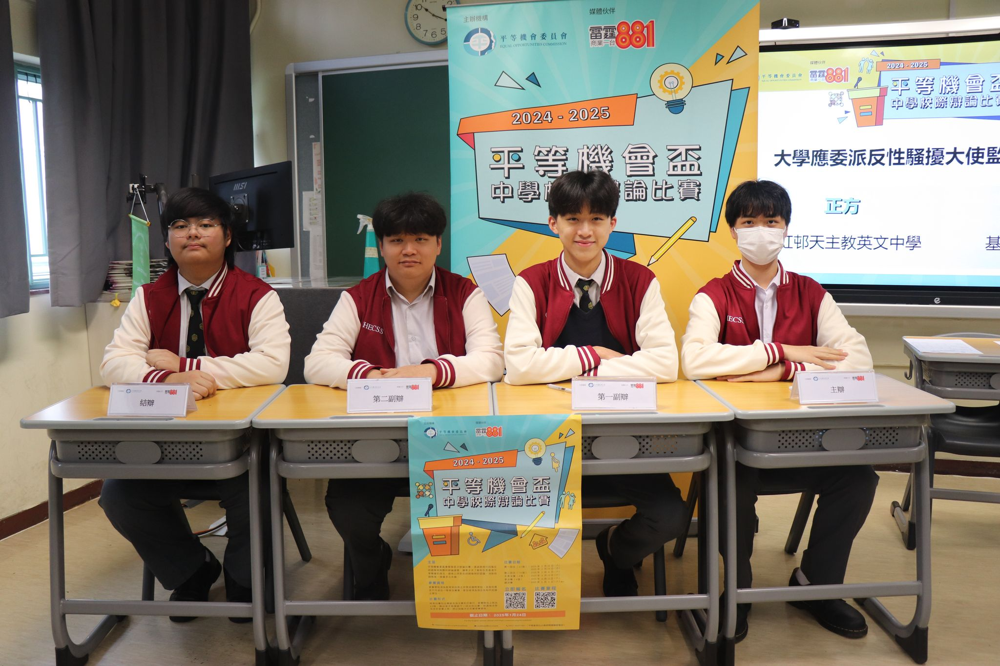
正方：彩虹邨天主教英文中學

反方：基督教崇真中學
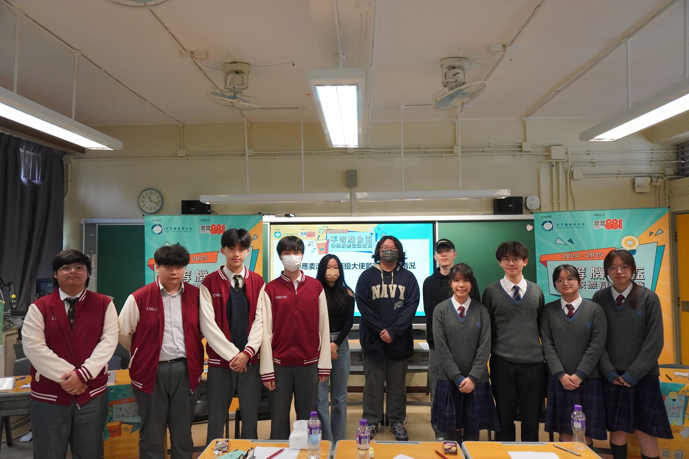
賽後大合照
| 辯題：消除文化差異是促進少數族裔融入社會的最有效方法 |
| 正方：協恩中學 |
| 反方：東華三院黃笏南中學 |
| 賽果：3：0，正方協恩中學勝出 |
| 最佳辯論員：正方主辯 廖萱嵐同學 |
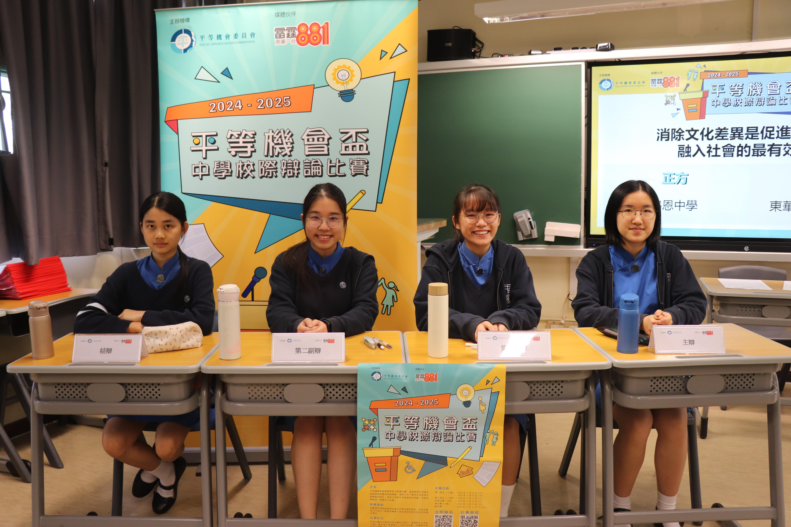
正方：協恩中學
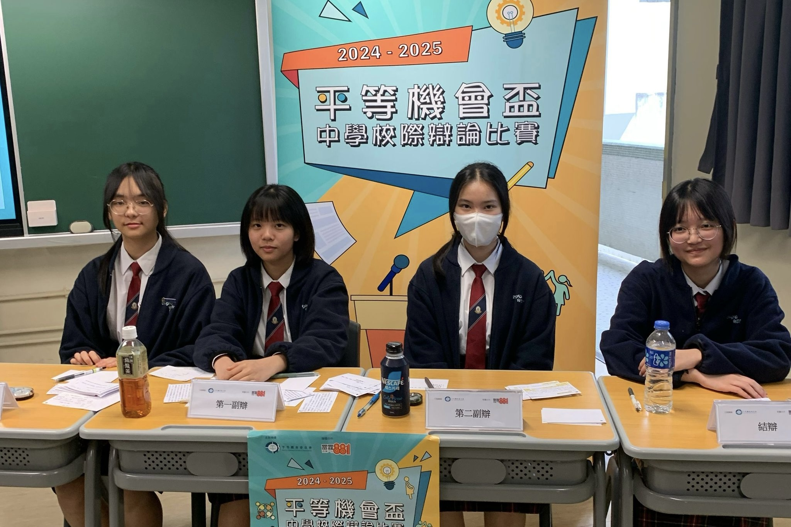
反方：東華三院黃笏南中學
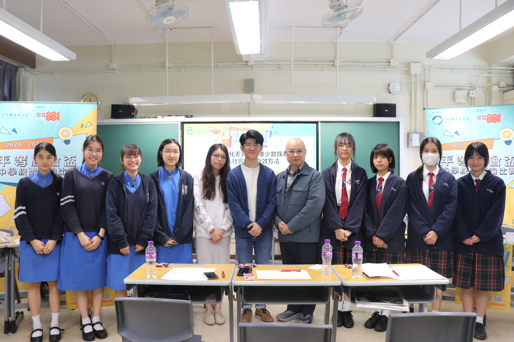
賽後大合照
| 辯題：教育局應制訂全面性教育課程 |
| 正方：聖公會聖三一堂中學 |
| 反方：粉嶺禮賢會中學 |
| 賽果：1：2，反方粉嶺禮賢會中學勝出 |
| 最佳辯論員：反方第一副辯 林可欣同學 |
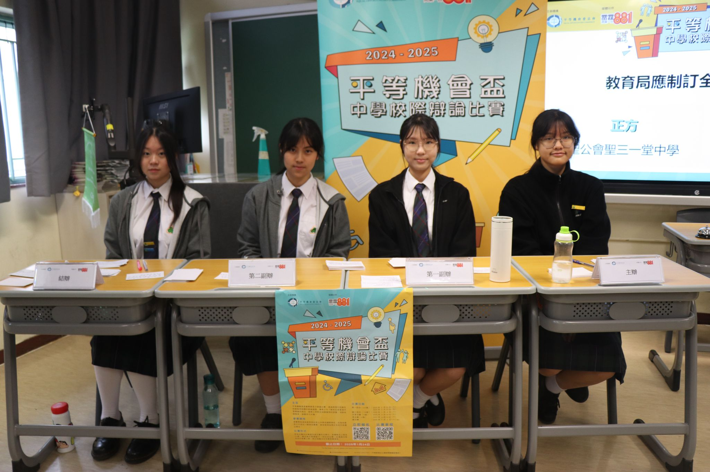
正方：聖公會聖三一堂中學
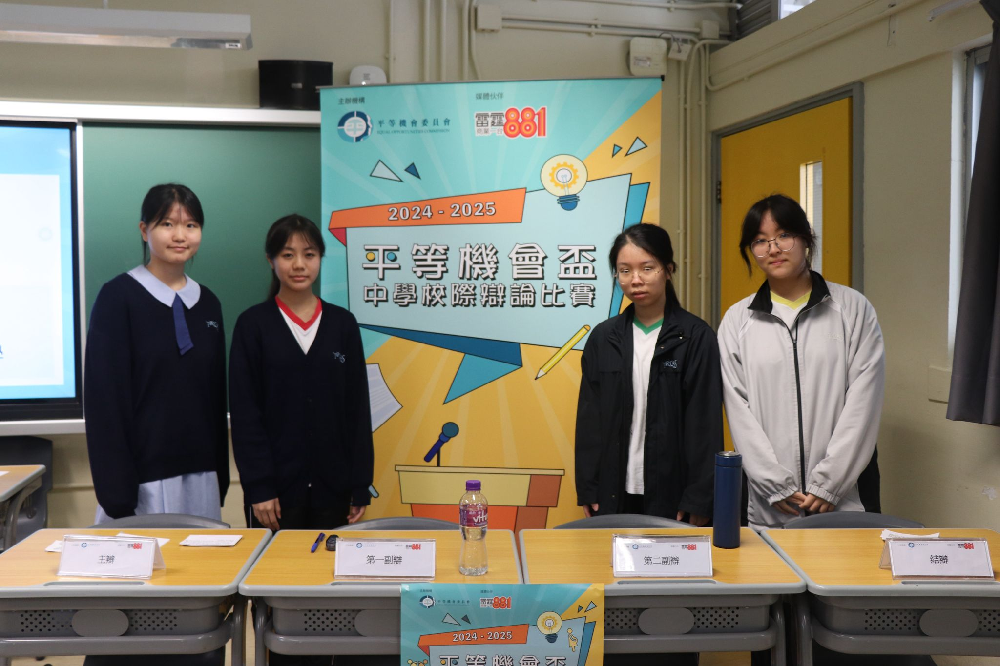
反方：粉嶺禮賢會中學
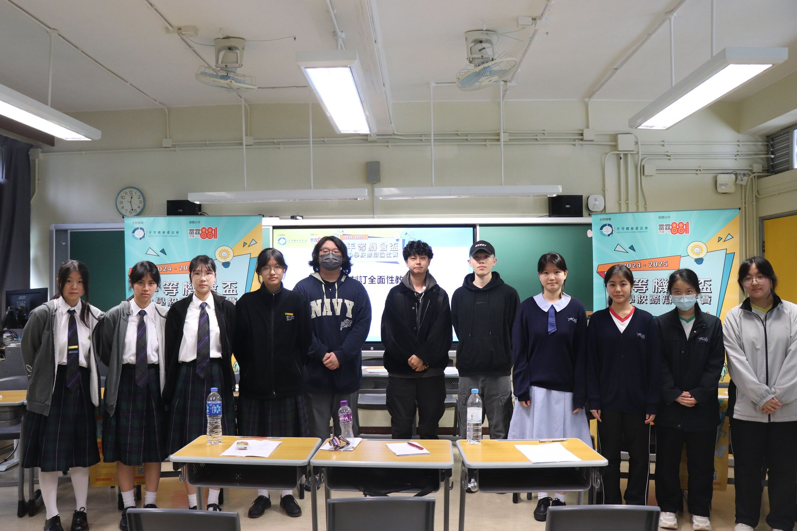
賽後大合照
| 辯題：實施在家工作是最有效的家庭友善僱傭政策 |
| 正方：聖公會林裘謀中學 |
| 反方：港大同學會書院 |
| 賽果：0：3，反方港大同學會書院勝出 |
| 最佳辯論員：反方主辯 張思朗同學 |
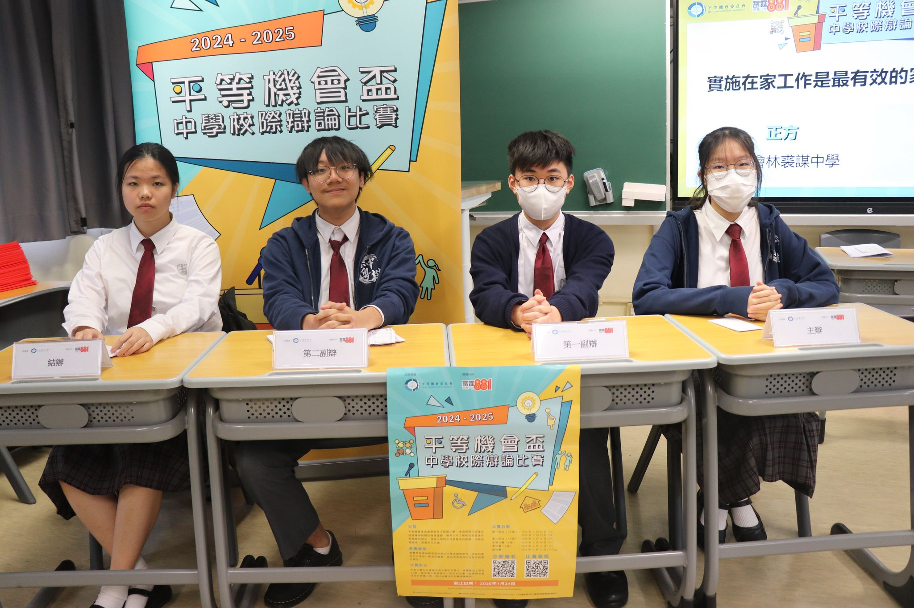
正方：聖公會林裘謀中學
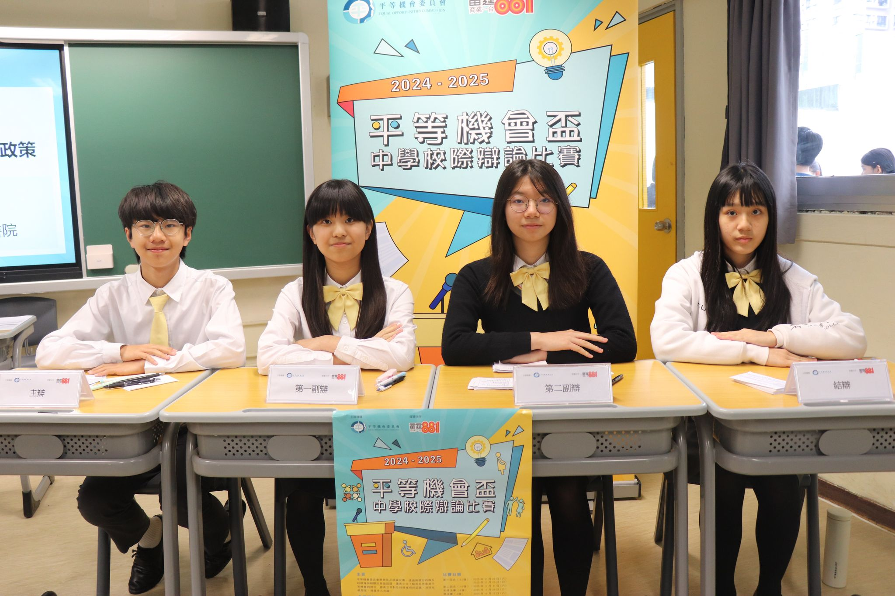
反方：港大同學會書院
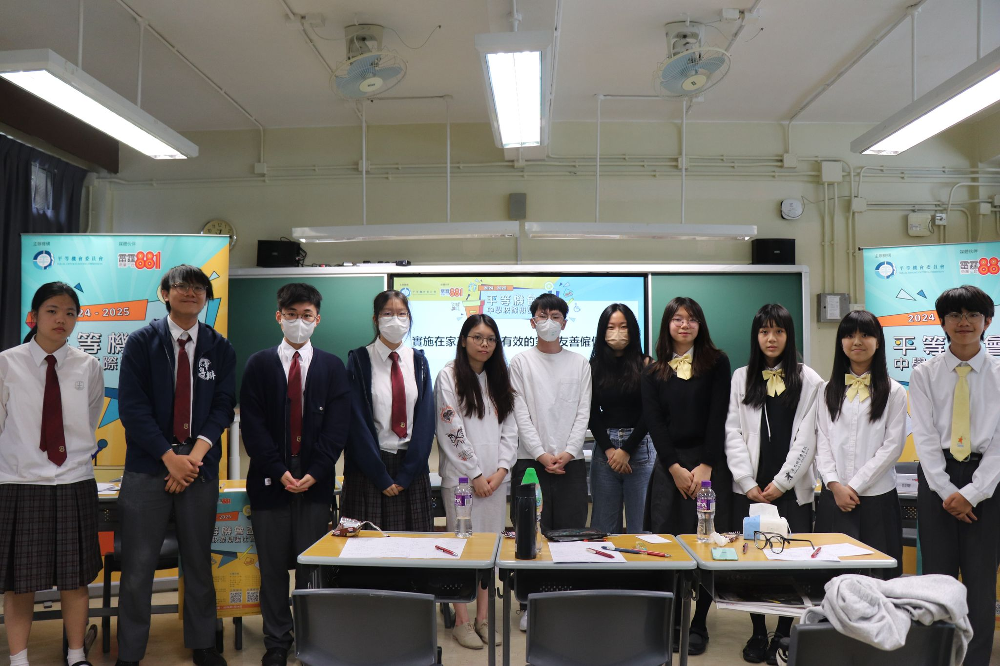
賽後大合照